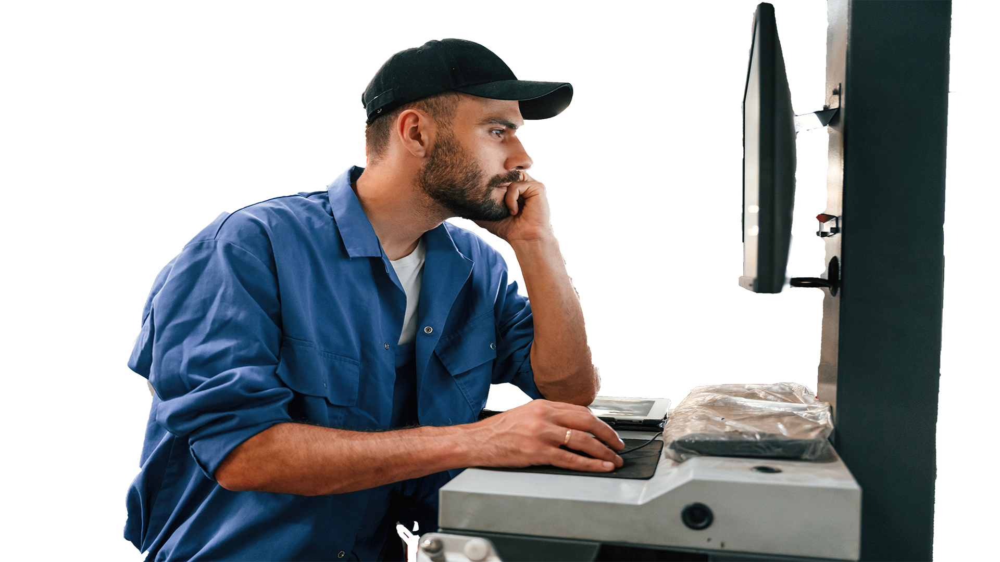
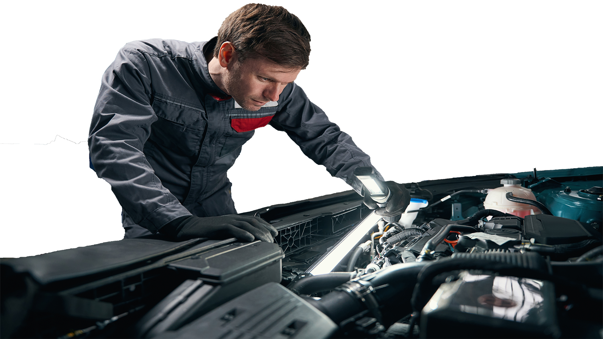
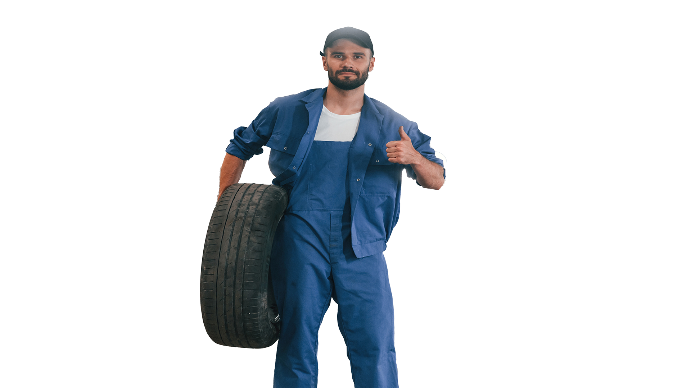
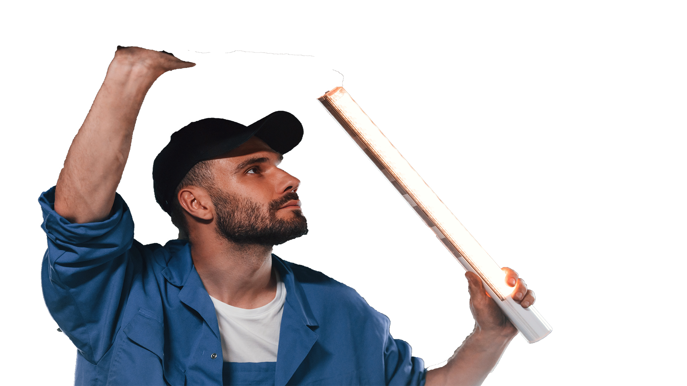
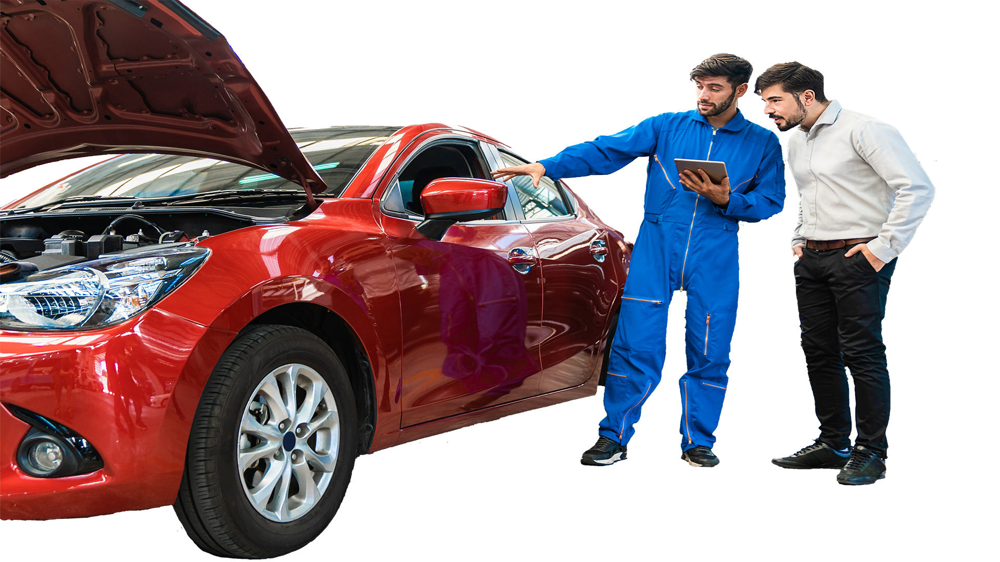
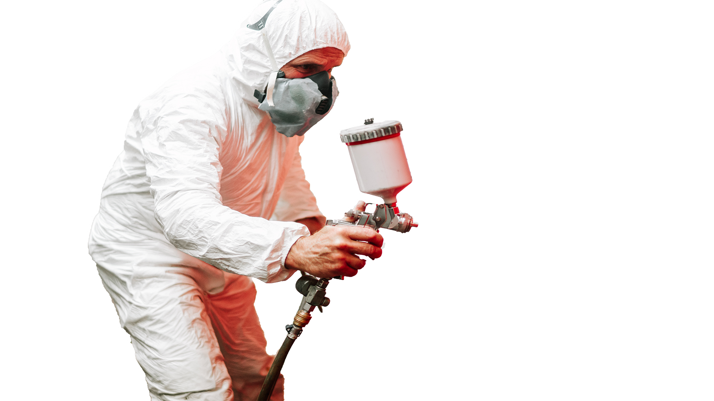
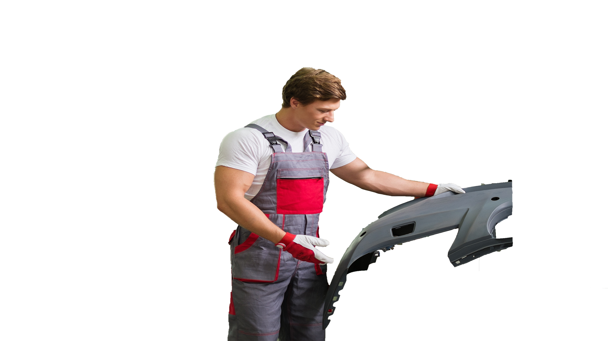
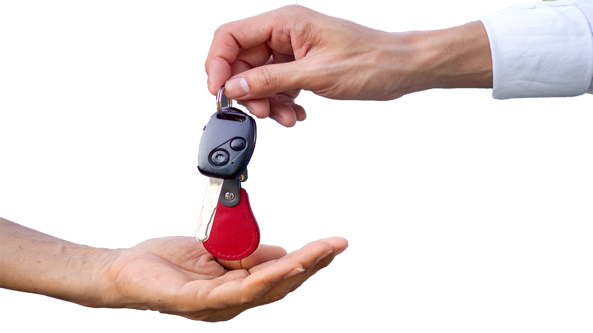

O nas
Warsztat Samochodowy Braci Druciarskich to miejsce, gdzie pasja do motoryzacji spotyka się z profesjonalizmem i dbałością o klienta. Założony w 1995 roku, nasz warsztat zawsze stawiał na rozwój i innowacje. Przez lata zdobywaliśmy doświadczenie, szkoliliśmy się i inwestowaliśmy w najnowsze technologie, aby sprostać rosnącym wymaganiom naszych klientów. Dziś jesteśmy dumni, że możemy zapewnić kompleksową obsługę dla prawie każdego typu pojazdu. Nasza misja to zapewnienie najwyższej jakości usług, a satysfakcja klienta jest dla nas najważniejsza. Nasza firma stale się rozwija, a nasz zespół składa się z wykwalifikowanych specjalistów, którzy są na bieżąco z najnowszymi trendami i technologiami w branży motoryzacyjnej. Wierzymy, że ciągłe szkolenia i inwestycje w nowoczesne narzędzia i sprzęt są kluczem do utrzymania naszej pozycji jako jednego z wiodących warsztatów samochodowych w regionie. Jesteśmy dumni z naszej historii i z tego, co osiągnęliśmy, ale zawsze patrzymy w przyszłość. Naszym celem jest nie tylko utrzymanie wysokiego standardu obsługi, ale także ciągłe doskonalenie naszych usług, aby sprostać zmieniającym się potrzebom naszych klientów.
Usługi
- Diagnostyka komputerowa: Nasz warsztat jest wyposażony w najnowocześniejsze urządzenia do diagnostyki komputerowej, które pozwalają nam szybko i dokładnie zidentyfikować problemy z Twoim pojazdem.
- 
Serwis klimatyzacji: Oferujemy pełny zakres usług związanych z klimatyzacją, w tym serwis, czyszczenie i dezynfekcję, a także napełnianie i testy szczelności.
- 
Wymiana opon: Zapewniamy profesjonalną wymianę opon, balansowanie kół i sprawdzanie geometrii zawieszenia.
- 
Przeglądy okresowe: Wykonujemy przeglądy okresowe, które pomagają utrzymać Twój pojazd w doskonałym stanie i zapewniają bezpieczeństwo na drodze.
- 
Wycena indywidualnego problemu: Jeżeli masz problem z samochodem, który nie jest wymieniony w naszej ofercie, zapraszamy do kontaktu. Nasz zespół specjalistów dokona wyceny problemu i zaproponuje optymalne rozwiązanie.
- 
Lakierowanie elementu: Jest to usługa, która obejmuje profesjonalne malowanie i lakierowanie wybranych elementów pojazdu. Działa to idealnie w przypadku uszkodzonych lub zużytych powłok lakieru na konkretnych częściach samochodu.
- 
Montaż bodykitu: Jest to usługa, która umożliwia personalizację i nadanie wyjątkowego wyglądu Twojemu pojazdowi. Bodykity to zestawy estetycznych modyfikacji, które mogą obejmować nowe zderzaki, progi, spojlery i inne elementy poprawiające aerodynamikę i styl auta.
- 
Samochód zastępczy: Rozumiemy, że Twój czas jest cenny. Dlatego oferujemy możliwość wypożyczenia samochodu zastępczego na czas naprawy Twojego pojazdu. Cena wynajmu to 50 zł za dzień.
Cennik
| Usługa | Cena |
|---|---|
| Diagnostyka komputerowa | 150 zł |
| Serwis klimatyzacji | 280 zł |
| Wymiana opon | 100 zł |
| Przeglądy okresowe | 300 zł |
| Lakierowanie elementu | 300-800 zł |
| Montaż bodykit | 5700 zł - ∞ |
| Samochód zastępczy | 100 zł doba |
Kontakt
Gruz Garage
48-200 Prudnik ul. Druciarska 2137.
Tel: 0700 200 54
Email: gruzgarage@psysna.pl